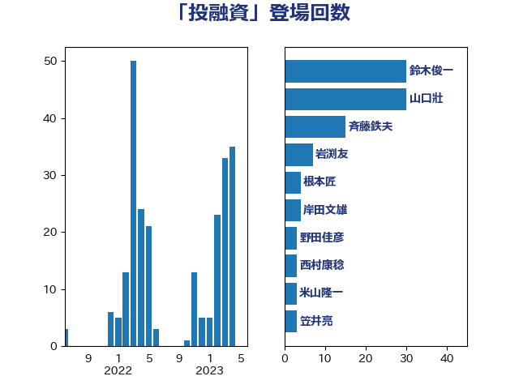

単語「投融資」

| 鈴木俊一 | 自由民主党 | 30 回 |
| 山口壯 | 自由民主党 | 30 回 |
| 斉藤鉄夫 | 公明党 | 15 回 |
| 岩渕友 | 日本共産党 | 7 回 |
| 根本匠 | 自由民主党 | 4 回 |
| 岸田文雄 | 自由民主党 | 4 回 |
| 野田佳彦 | 立憲民主党 | 3 回 |
| 西村康稔 | 自由民主党 | 3 回 |
| 米山隆一 | 立憲民主党 | 3 回 |
| 笠井亮 | 日本共産党 | 3 回 |
| 牧山ひろえ | 立憲民主党 | 3 回 |
| 櫻井周 | 立憲民主党 | 3 回 |
| 青木愛 | 立憲民主党 | 2 回 |
| 阿部司 | 日本維新の会 | 2 回 |
| 藤岡隆雄 | 立憲民主党 | 2 回 |
| 秋野公造 | 公明党 | 2 回 |
| 福田昭夫 | 立憲民主党 | 2 回 |
| 石井浩郎 | 自由民主党 | 2 回 |
| 石井拓 | 自由民主党 | 2 回 |
| 猪口邦子 | 自由民主党 | 2 回 |
| 熊谷裕人 | 立憲民主党 | 2 回 |
| 滝沢求 | 自由民主党 | 2 回 |
| 渡辺猛之 | 自由民主党 | 2 回 |
| 掘井健智 | 日本維新の会 | 2 回 |
| 岡田直樹 | 自由民主党 | 2 回 |
| 堂込麻紀子 | 無所属 | 2 回 |
| 勝俣孝明 | 自由民主党 | 2 回 |
| 伴野豊 | 立憲民主党 | 2 回 |
| 井上貴博 | 自由民主党 | 2 回 |
| 三木圭恵 | 日本維新の会 | 2 回 |
| 高市早苗 | 自由民主党 | 1 回 |
| 青柳仁士 | 日本維新の会 | 1 回 |
| 階猛 | 立憲民主党 | 1 回 |
| 野村哲郎 | 自由民主党 | 1 回 |
| 野中厚 | 自由民主党 | 1 回 |
| 遠藤良太 | 日本維新の会 | 1 回 |
| 輿水恵一 | 公明党 | 1 回 |
| 豊田俊郎 | 自由民主党 | 1 回 |
| 葉梨康弘 | 自由民主党 | 1 回 |
| 空本誠喜 | 日本維新の会 | 1 回 |
| 稲津久 | 公明党 | 1 回 |
| 田村貴昭 | 日本共産党 | 1 回 |
| 片山大介 | 日本維新の会 | 1 回 |
| 浮島智子 | 公明党 | 1 回 |
| 沢田良 | 日本維新の会 | 1 回 |
| 武部新 | 自由民主党 | 1 回 |
| 柴田巧 | 日本維新の会 | 1 回 |
| 林芳正 | 自由民主党 | 1 回 |
| 松野博一 | 自由民主党 | 1 回 |
| 岡本三成 | 公明党 | 1 回 |
| 山岡達丸 | 立憲民主党 | 1 回 |
| 大野泰正 | 自由民主党 | 1 回 |
| 大西英男 | 自由民主党 | 1 回 |
| 大塚耕平 | 国民民主党 | 1 回 |
| 古賀之士 | 立憲民主党 | 1 回 |
| 佐々木さやか | 公明党 | 1 回 |
| 住吉寛紀 | 日本維新の会 | 1 回 |
| 中西健治 | 自由民主党 | 1 回 |
| 三浦信祐 | 公明党 | 1 回 |